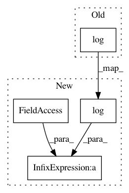

3f71351e300f606bd4c5bc45d682365f98389bcd,GPflow/transforms.py,Log1pe,tf_forward,#Log1pe#Any#,87
Before Change
def tf_forward(self, x):
one = 0. * x + 1. // ensures shape
return tf.log(one + tf.exp(x))
def tf_log_jacobian(self, x):
return -tf.reduce_sum(tf.log(1. + tf.exp(-x)))
After Change
def tf_forward(self, x):
one = tf.ones(tf.shape(x), tf.float64)
return tf.log(one + tf.exp(x)) + self._lower
def tf_log_jacobian(self, x):
return -tf.reduce_sum(tf.log(1. + tf.exp(-x)))
In pattern: SUPERPATTERN
Frequency: 3
Non-data size: 4
Instances
Project Name: GPflow/GPflow
Commit Name: 3f71351e300f606bd4c5bc45d682365f98389bcd
Time: 2016-07-06
Author: james.hensman@gmail.com
File Name: GPflow/transforms.py
Class Name: Log1pe
Method Name: tf_forward
Project Name: GPflow/GPflow
Commit Name: 3f71351e300f606bd4c5bc45d682365f98389bcd
Time: 2016-07-06
Author: james.hensman@gmail.com
File Name: GPflow/transforms.py
Class Name: Log1pe
Method Name: forward
Project Name: microsoft/nni
Commit Name: c6b7cc8931042f318693d5ddcd1cc430d7734144
Time: 2019-03-12
Author: purityfan@163.com
File Name: src/sdk/pynni/nni/hyperband_advisor/hyperband_advisor.py
Class Name: Hyperband
Method Name: __init__